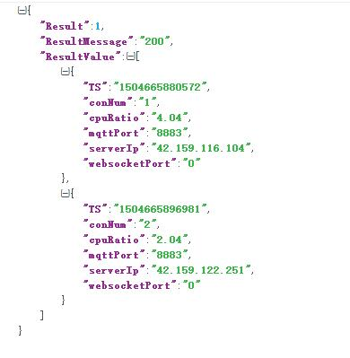

原文出处:本文由博客园博主蜗牛201提供。
原文连接:https://www.cnblogs.com/woniu201/p/11687050.html
原文连接:https://www.cnblogs.com/woniu201/p/11687050.html
JSON是一种轻量级的数据交互格式，易于人阅读和编写，同时也易于机器解析和生成，并有效地提升网络传输效率，实际项目中经常用到，相比xml有很多优点，问问度娘，优点一箩筐。
第三方库
json解析选用jsoncpp作为第三方库，jsoncpp使用广泛，c++开发首选。
jsoncpp目前已经托管到了github上，地址：https://github.com/open-source-parsers/jsoncpp
使用
使用c++进行构造json和解析json，选用vs2010作为IDE。工程中使用jsoncpp的源码进行编译，没有使用jsoncpp的库，为方便大家使用把dll和lib库也放到了我的工程jsoncpplib文件夹下，有需要的可以直接引用库。
待解析的json数据格式如下图：

/********************************************************
Copyright (C), 2016-2017,
FileName: main
Author: woniu201
Email: wangpengfei.201@163.com
Created: 2017/09/06
Description:use jsoncpp src , not use dll, but i also provide dll and lib.
********************************************************/
#include "stdio.h"
#include <string>
#include "jsoncpp/json.h"
using namespace std;
/************************************
@ Brief: read file
@ Author: woniu201
@ Created: 2017/09/06
@ Return: file data
************************************/
char *getfileAll(char *fname)
{
FILE *fp;
char *str;
char txt[1000];
int filesize;
if ((fp=fopen(fname,"r"))==NULL){
printf("open file %s fail \n",fname);
return NULL;
}
fseek(fp,0,SEEK_END);
filesize = ftell(fp);
str=(char *)malloc(filesize);
str[0]=0;
rewind(fp);
while((fgets(txt,1000,fp))!=NULL){
strcat(str,txt);
}
fclose(fp);
return str;
}
/************************************
@ Brief: write file
@ Author: woniu201
@ Created: 2017/09/06
@ Return:
************************************/
int writefileAll(char* fname,const char* data)
{
FILE *fp;
if ((fp=fopen(fname, "w")) == NULL)
{
printf("open file %s fail \n", fname);
return 1;
}
fprintf(fp, "%s", data);
fclose(fp);
return 0;
}
/************************************
@ Brief: parse json data
@ Author: woniu201
@ Created: 2017/09/06
@ Return:
************************************/
int parseJSON(const char* jsonstr)
{
Json::Reader reader;
Json::Value resp;
if (!reader.parse(jsonstr, resp, false))
{
printf("bad json format!\n");
return 1;
}
int result = resp["Result"].asInt();
string resultMessage = resp["ResultMessage"].asString();
printf("Result=%d; ResultMessage=%s\n", result, resultMessage.c_str());
Json::Value & resultValue = resp["ResultValue"];
for (int i=0; i<resultValue.size(); i++)
{
Json::Value subJson = resultValue[i];
string cpuRatio = subJson["cpuRatio"].asString();
string serverIp = subJson["serverIp"].asString();
string conNum = subJson["conNum"].asString();
string websocketPort = subJson["websocketPort"].asString();
string mqttPort = subJson["mqttPort"].asString();
string ts = subJson["TS"].asString();
printf("cpuRatio=%s; serverIp=%s; conNum=%s; websocketPort=%s; mqttPort=%s; ts=%s\n",cpuRatio.c_str(), serverIp.c_str(),
conNum.c_str(), websocketPort.c_str(), mqttPort.c_str(), ts.c_str());
}
return 0;
}
/************************************
@ Brief: create json data
@ Author: woniu201
@ Created: 2017/09/06
@ Return:
************************************/
int createJSON()
{
Json::Value req;
req["Result"] = 1;
req["ResultMessage"] = "200";
Json::Value object1;
object1["cpuRatio"] = "4.04";
object1["serverIp"] = "42.159.116.104";
object1["conNum"] = "1";
object1["websocketPort"] = "0";
object1["mqttPort"] = "8883";
object1["TS"] = "1504665880572";
Json::Value object2;
object2["cpuRatio"] = "2.04";
object2["serverIp"] = "42.159.122.251";
object2["conNum"] = "2";
object2["websocketPort"] = "0";
object2["mqttPort"] = "8883";
object2["TS"] = "1504665896981";
Json::Value jarray;
jarray.append(object1);
jarray.append(object2);
req["ResultValue"] = jarray;
Json::FastWriter writer;
string jsonstr = writer.write(req);
printf("%s\n", jsonstr.c_str());
writefileAll("createJson.json", jsonstr.c_str());
return 0;
}
int main()
{
char* json = getfileAll("parseJson.json");
parseJSON(json);
printf("===============================\n");
createJSON();
getchar();
return 1;
}关注下面公众号，回复"104"获取源码